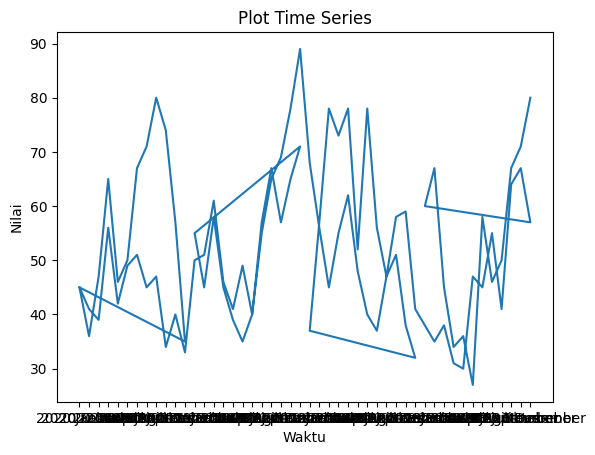
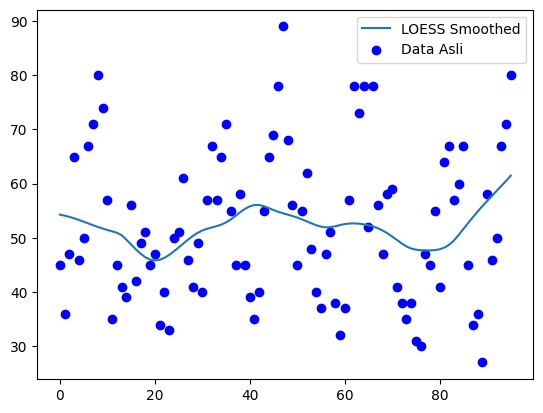
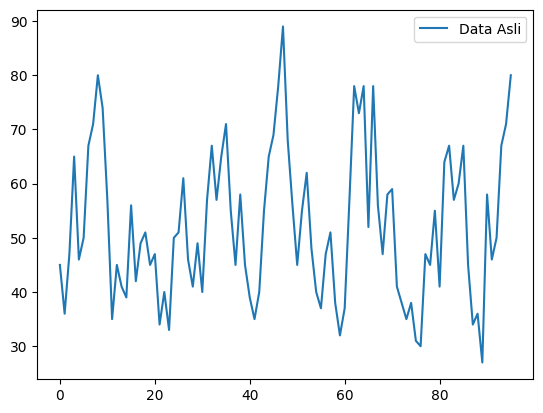
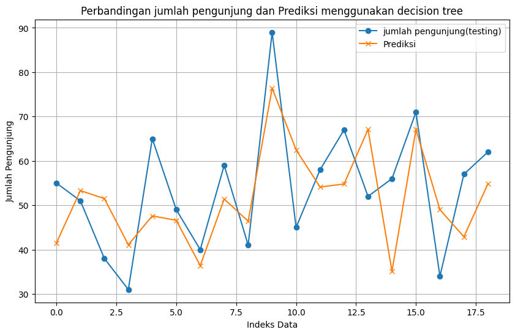

Project I#
Nama: Yudha nuur cahyo
NIM: 220411100052
Mata Kuliah: Proyek sains Data
Tujauan analisis ( Business Understanding)#
Notebook ini bertujuan untuk membuat model prediksi jumlah pengunjung dengan menggunakan data historis jumlah pengunjung dalam beberapa hari terakhir. Model yang digunakan untuk prediksi adalah model pembelajaran mesin, seperti Bagging, dan hasil dari model tersebut disimpan dalam bentuk file .pkl yang digunakan untuk deploy.
Memahami Data ( Data Undertanding)#
Dataset ini berisi informasi jumlah pengunjung perpustakaan per bulan yang mempunyai fitur kode_provinsi;provinsi;kode_kabupaten;kabupaten;tahun;bulan;jenis_pengunjung;jumlah_pengunjung;satuan.
Data awalnya tidak terpisah dengan benar karena delimiter salah, tetapi sudah diperbaiki menggunakan parameter delimiter=’;’.
Data difokuskan hanya pada dua kolom utama:
Periode waktu (tahun_bulan).
Jumlah pengunjung (jumlah_pengunjung).
from google.colab import drive
drive.mount('/content/drive')
---------------------------------------------------------------------------
KeyboardInterrupt Traceback (most recent call last)
<ipython-input-1-d5df0069828e> in <cell line: 2>()
1 from google.colab import drive
----> 2 drive.mount('/content/drive')
/usr/local/lib/python3.10/dist-packages/google/colab/drive.py in mount(mountpoint, force_remount, timeout_ms, readonly)
98 def mount(mountpoint, force_remount=False, timeout_ms=120000, readonly=False):
99 """Mount your Google Drive at the specified mountpoint path."""
--> 100 return _mount(
101 mountpoint,
102 force_remount=force_remount,
/usr/local/lib/python3.10/dist-packages/google/colab/drive.py in _mount(mountpoint, force_remount, timeout_ms, ephemeral, readonly)
135 )
136 if ephemeral:
--> 137 _message.blocking_request(
138 'request_auth',
139 request={'authType': 'dfs_ephemeral'},
/usr/local/lib/python3.10/dist-packages/google/colab/_message.py in blocking_request(request_type, request, timeout_sec, parent)
174 request_type, request, parent=parent, expect_reply=True
175 )
--> 176 return read_reply_from_input(request_id, timeout_sec)
/usr/local/lib/python3.10/dist-packages/google/colab/_message.py in read_reply_from_input(message_id, timeout_sec)
94 reply = _read_next_input_message()
95 if reply == _NOT_READY or not isinstance(reply, dict):
---> 96 time.sleep(0.025)
97 continue
98 if (
KeyboardInterrupt:
import pandas as pd
# Path ke file di Google Drive
file_path = '/content/drive/My Drive/psd/dataset/jumlah-pengunjung-k-oleh-pns-dan-swasta-umum-pada-perpustakan-umum-meulaboh-per-bulan.csv'
# Membaca file CSV ke dalam DataFrame
data = pd.read_csv(file_path)
# Menampilkan beberapa baris pertama data
print(data.head())
kode_provinsi;provinsi;kode_kabupaten;kabupaten;tahun;bulan;jenis_pengunjung;jumlah_pengunjung;satuan
0 11;Aceh;11.05;Kabupaten Aceh Barat;2020;Januar...
1 11;Aceh;11.05;Kabupaten Aceh Barat;2020;Februa...
2 11;Aceh;11.05;Kabupaten Aceh Barat;2020;Maret;...
3 11;Aceh;11.05;Kabupaten Aceh Barat;2020;April;...
4 11;Aceh;11.05;Kabupaten Aceh Barat;2020;Mei;PN...
import pandas as pd
# Path ke file di Google Drive
file_path = '/content/drive/My Drive/psd/dataset/jumlah-pengunjung-k-oleh-pns-dan-swasta-umum-pada-perpustakan-umum-meulaboh-per-bulan.csv'
# Membaca file CSV, specifying delimiter and header
data = pd.read_csv(file_path, delimiter=';', header=0)
# Now you can access the columns by their names
data['tahun_bulan'] = data['tahun'].astype(str) + ' ' + data['bulan'].astype(str)
data_filtered = data[['tahun_bulan', 'jumlah_pengunjung']]
print(data_filtered)
tahun_bulan jumlah_pengunjung
0 2020 Januari 45
1 2020 Februari 36
2 2020 Maret 47
3 2020 April 65
4 2020 Mei 46
.. ... ...
91 2023 Agustus 46
92 2023 September 50
93 2023 Oktober 67
94 2023 November 71
95 2023 Desember 80
[96 rows x 2 columns]
Praproses data ( Preprocessing data)#
print(data_filtered.isnull().sum())
tahun_bulan 0
jumlah_pengunjung 0
dtype: int64
visualisasi data#
import matplotlib.pyplot as plt
# Visualisasi data time series
plt.plot(data['tahun_bulan'], data['jumlah_pengunjung'])
plt.title('Plot Time Series')
plt.xlabel('Waktu')
plt.ylabel('Nilai')
plt.show()

dari visualisasi data di atas terlihat masih memiliki banyak outlier maka say akan melakukan penghapusan outlier
mengidentifikasi dan menghapus outlier#
from scipy.stats import zscore
# Menghitung Z-Score
data_filtered['z_score'] = zscore(data_filtered['jumlah_pengunjung'])
# Menghapus outlier jika Z-Score lebih dari 3 atau kurang dari -3
data_filtered_cleaned = data_filtered[data_filtered['z_score'].abs() <= 3]
<ipython-input-6-f2ad66d24551>:4: SettingWithCopyWarning:
A value is trying to be set on a copy of a slice from a DataFrame.
Try using .loc[row_indexer,col_indexer] = value instead
See the caveats in the documentation: https://pandas.pydata.org/pandas-docs/stable/user_guide/indexing.html#returning-a-view-versus-a-copy
data_filtered['z_score'] = zscore(data_filtered['jumlah_pengunjung'])
kode di atas digunakan untuk mengidentifikasi dan menghapus outlier dari dataset berdasarkan nilai Z-Score, dengan asumsi bahwa nilai data yang memiliki Z-Score lebih dari 3 atau kurang dari -3 adalah outlier. Proses ini membantu membersihkan data agar model yang dilatih tidak dipengaruhi oleh nilai-nilai ekstrem yang dapat mengganggu hasil analisis atau prediksi.
Melakukan LOESS smoothing#
LOESS smoothing (Local Regression Smoothing) adalah metode untuk memperhalus data yang berfluktuasi atau bergelombang, dengan tujuan untuk mendapatkan tren atau pola yang lebih jelas, menghilangkan kebisingan (noise), dan menyajikan data dalam bentuk yang lebih mudah dianalisis atau diprediksi.
from statsmodels.nonparametric.smoothers_lowess import lowess
smoothed = lowess(data_filtered_cleaned['jumlah_pengunjung'], data_filtered_cleaned.index, frac=0.3)
# Plot data smoothed
plt.plot(smoothed[:, 0], smoothed[:, 1], label='LOESS Smoothed')
plt.scatter(data_filtered_cleaned.index, data_filtered_cleaned['jumlah_pengunjung'], color='blue', label='Data Asli')
plt.legend()
plt.show()

visualisasi data setelah di hapus outliernya#
from statsmodels.tsa.arima.model import ARIMA
# Model ARIMA
model = ARIMA(data_filtered_cleaned['jumlah_pengunjung'], order=(5,1,0)) # Sesuaikan dengan data Anda
model_fit = model.fit()
# Prediksi untuk 12 periode ke depan
forecast = model_fit.forecast(steps=12)
# Plot hasil tanpa prediksi
plt.plot(data_filtered_cleaned.index, data_filtered_cleaned['jumlah_pengunjung'], label='Data Asli')
plt.legend()
plt.show()

Mengambil kolom nilai jumlah_pengunjungdalam bentuk array numpy untuk digunakan dalam analisis.
prices = data['jumlah_pengunjung'].values
print(prices)
[45 36 47 65 46 50 67 71 80 74 57 35 45 41 39 56 42 49 51 45 47 34 40 33
50 51 61 46 41 49 40 57 67 57 65 71 55 45 58 45 39 35 40 55 65 69 78 89
68 56 45 55 62 48 40 37 47 51 38 32 37 57 78 73 78 52 78 56 47 58 59 41
38 35 38 31 30 47 45 55 41 64 67 57 60 67 45 34 36 27 58 46 50 67 71 80]
melakukan sliding window#
import numpy as np # Import numpy library and give it alias 'np'
def sliding_window(data_filtered_cleaned, window_size):
X, y = [], []
for i in range(len(data_filtered_cleaned) - window_size):
X.append(data_filtered_cleaned[i:i + window_size])
y.append(data_filtered_cleaned[i + window_size])
return np.array(X), np.array(y)
window_size = 3 # Ukuran jendela =3
X, y = sliding_window(prices, window_size)
print("X:", X)
print("y:", y)
X: [[45 36 47]
[36 47 65]
[47 65 46]
[65 46 50]
[46 50 67]
[50 67 71]
[67 71 80]
[71 80 74]
[80 74 57]
[74 57 35]
[57 35 45]
[35 45 41]
[45 41 39]
[41 39 56]
[39 56 42]
[56 42 49]
[42 49 51]
[49 51 45]
[51 45 47]
[45 47 34]
[47 34 40]
[34 40 33]
[40 33 50]
[33 50 51]
[50 51 61]
[51 61 46]
[61 46 41]
[46 41 49]
[41 49 40]
[49 40 57]
[40 57 67]
[57 67 57]
[67 57 65]
[57 65 71]
[65 71 55]
[71 55 45]
[55 45 58]
[45 58 45]
[58 45 39]
[45 39 35]
[39 35 40]
[35 40 55]
[40 55 65]
[55 65 69]
[65 69 78]
[69 78 89]
[78 89 68]
[89 68 56]
[68 56 45]
[56 45 55]
[45 55 62]
[55 62 48]
[62 48 40]
[48 40 37]
[40 37 47]
[37 47 51]
[47 51 38]
[51 38 32]
[38 32 37]
[32 37 57]
[37 57 78]
[57 78 73]
[78 73 78]
[73 78 52]
[78 52 78]
[52 78 56]
[78 56 47]
[56 47 58]
[47 58 59]
[58 59 41]
[59 41 38]
[41 38 35]
[38 35 38]
[35 38 31]
[38 31 30]
[31 30 47]
[30 47 45]
[47 45 55]
[45 55 41]
[55 41 64]
[41 64 67]
[64 67 57]
[67 57 60]
[57 60 67]
[60 67 45]
[67 45 34]
[45 34 36]
[34 36 27]
[36 27 58]
[27 58 46]
[58 46 50]
[46 50 67]
[50 67 71]]
y: [65 46 50 67 71 80 74 57 35 45 41 39 56 42 49 51 45 47 34 40 33 50 51 61
46 41 49 40 57 67 57 65 71 55 45 58 45 39 35 40 55 65 69 78 89 68 56 45
55 62 48 40 37 47 51 38 32 37 57 78 73 78 52 78 56 47 58 59 41 38 35 38
31 30 47 45 55 41 64 67 57 60 67 45 34 36 27 58 46 50 67 71 80]
jumlahData=len(X)
print(jumlahData)
93
Normalisasikan data#
from sklearn.preprocessing import MinMaxScaler
# Normalisasi data X
scaler = MinMaxScaler()
X_scaled = scaler.fit_transform(X)
!pip install scikit-learn
Requirement already satisfied: scikit-learn in /usr/local/lib/python3.10/dist-packages (1.5.2)
Requirement already satisfied: numpy>=1.19.5 in /usr/local/lib/python3.10/dist-packages (from scikit-learn) (1.26.4)
Requirement already satisfied: scipy>=1.6.0 in /usr/local/lib/python3.10/dist-packages (from scikit-learn) (1.13.1)
Requirement already satisfied: joblib>=1.2.0 in /usr/local/lib/python3.10/dist-packages (from scikit-learn) (1.4.2)
Requirement already satisfied: threadpoolctl>=3.1.0 in /usr/local/lib/python3.10/dist-packages (from scikit-learn) (3.5.0)
Membagi data menjadi set latih dan uji#
from sklearn.model_selection import train_test_split # Import the train_test_split function
X_train, X_test, y_train, y_test = train_test_split(
X, y, test_size=0.2, random_state=42)
print(y_train)
[47 51 41 64 57 55 39 58 38 65 41 45 35 80 69 45 45 68 45 57 57 40 40 55
41 47 42 46 67 47 35 35 30 74 50 45 58 32 80 51 78 48 45 56 56 78 71 34
65 57 55 60 37 71 46 78 78 67 39 67 46 37 50 50 61 36 47 27 67 33 73 38
49 40]
Modelling#
Melatih model BaggingRegressor#
#membuat model dengan decision tree
from sklearn.tree import DecisionTreeRegressor
from sklearn.ensemble import BaggingRegressor
tree = DecisionTreeRegressor()
bagging_model2 = BaggingRegressor(estimator=tree, n_estimators=10, random_state=42)
# Melatih model pada data
bagging_model2.fit(X_train, y_train)
BaggingRegressor(estimator=DecisionTreeRegressor(), random_state=42)In a Jupyter environment, please rerun this cell to show the HTML representation or trust the notebook.
On GitHub, the HTML representation is unable to render, please try loading this page with nbviewer.org.
BaggingRegressor(estimator=DecisionTreeRegressor(), random_state=42)
DecisionTreeRegressor()
DecisionTreeRegressor()
Evaluasi#
from sklearn.metrics import mean_squared_error
y_pred2 = bagging_model2.predict(X_test)
# Prediksi pada data training untuk menghitung RMSE
rmse2 = np.sqrt(mean_squared_error(y_test, y_pred2))
print("RMSE:", rmse2)
# Menghitung MAPE
mape2 = np.mean(np.abs((y_test - y_pred2) / y_test)) * 100
print("MAPE:", mape2)
RMSE: 11.843141475132347
MAPE: 20.746369614266555
# 6. Visualisasi Hasil (Opsional)
import matplotlib.pyplot as plt
plt.figure(figsize=(10, 6))
plt.plot(range(len(y_test)), y_test, label='jumlah pengunjung(testing)', marker='o')
plt.plot(range(len(y_pred2)), y_pred2, label='Prediksi', marker='x')
plt.xlabel('Indeks Data')
plt.ylabel('Jumlah Pengunjung')
plt.title('Perbandingan jumlah pengunjung dan Prediksi menggunakan decision tree')
plt.legend()
plt.grid(True)
plt.show()

melakukan uji coba pada model yang di latih untuk melakukan prediksi#
new_data = np.array([prices[-3:]]) # Mengambil 3 hari terakhir
# Prediksi harga pada minggu ke-41
predicted_price2 = bagging_model2.predict(new_data)
print("hasil prediksi jumlah pengunjung:", predicted_price2)
hasil prediksi jumlah pengunjung: [76.4]
import pickle # Import the pickle module
with open('bagging_model2.pkl', 'wb') as file:
pickle.dump(bagging_model2, file)
print("Model berhasil disimpan sebagai 'bagging_model2.pkl'.")
Model berhasil disimpan sebagai 'bagging_model2.pkl'.
Hasil Deploy#
ini adalah hasil deploy untuk prediksi ini : https://huggingface.co/spaces/yudhanuurcahyo/psd_prediksi_tugas1